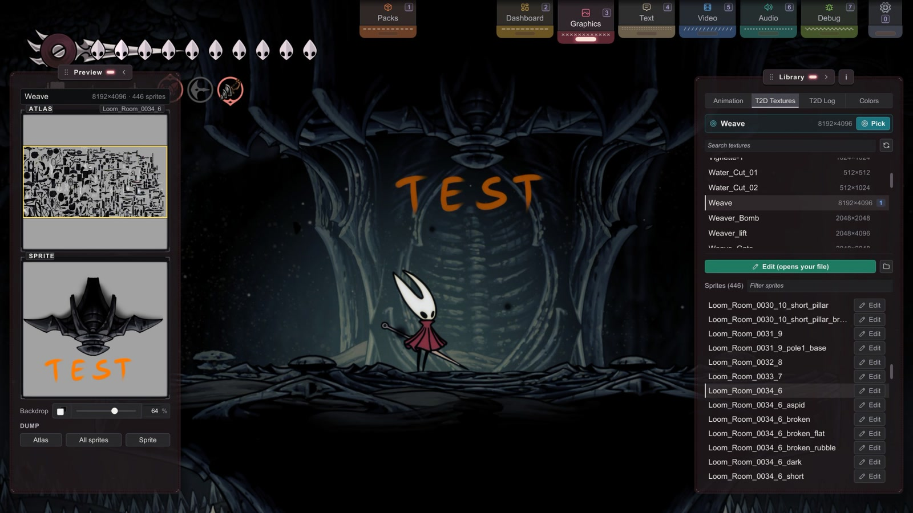

B4 T2D 精灵图
精灵图 · 面向创作者
来认识一下 Texture2D（T2D）——丝之歌美术里的“问题儿童”。
它什么都要掺一脚：菜单、HUD、特效、道具，甚至还有一部分动画。
如果替换就是不生效，路径看起来又没问题，背后多半就是 T2D。
你将学会：认出 T2D 精灵图，单独替换其中一张，找到你需要的名称，并避开唯一一种可能让文字乱掉的命名冲突（字体图集）。
开始之前：请先读 B2（图形标签页里用来查找精灵图的几种模式）。
T2D 是什么，怎么认出它
丝之歌用两种方式绘制 2D 美术（原因见 Stitchwork 工作原理）。tk2d 是规规矩矩的那个：大部分带动画的角色都用它，打包在共享图集里，动画可以一帧一帧地查看。T2D 则是“问题儿童”。它就是普通的 Unity Sprite 和 Texture2D，游戏直接把它们交给渲染器和 UI，所以到处都能碰到它：
- HUD（血量、灵丝、货币）
- 菜单和 UI 的面板、提示和图标
- 很多特效和技能画面
- 场景里静止不动的道具
- 部分过场动画的画面
- 甚至还有游戏文字的字形（字体图集）
T2D 也会动，而且当然是用它自己的那一套。tk2d 有自己的动画系统；T2D 则借用 Unity 的 Animator。每一帧都是一张单独的精灵图，由 Animator 轮流显示。你可以一个文件一个文件地替换这些帧，也可以直接替换它们的整图（仅用于移植）。Stitchwork 会盯着这些精灵图，每次显示到那一帧，就套用你的文件。动画模式不会列出它们，因为它只显示 tk2d 动画。
最可靠的判断方法在图形标签页里：出现在 T2D 贴图模式（而不是动画模式）里的精灵图，就是 T2D。某个替换死活不生效时，去另一个模式里查一查，是你最快的诊断办法。
文件夹决定走哪条路
T2D 的路径里实打实地有一层 T2D/。它可不是装饰——Stitchwork 正是靠它知道，这个文件要交给 Texture2D 系统处理，而不是 tk2d。同一个文件名，放在 Sprites/{Coll}/... 下和放在 Sprites/T2D/... 下，走的是两条完全不同的处理流程。
两种路径
单张精灵图——替换图集里的某一张精灵图：
Sprites/T2D/{AtlasName}/{SpriteName}.pngStitchwork 会用你的 PNG 新建一个 Sprite，并把它设置到当前正在使用原精灵图的每一个渲染器（以及 UI 的 Image）上。适合替换单个图标、HUD 上的一个小格子，或者某一帧特效。
Sprites/T2D/Hornet/health_pip.png整张图集——只用于移植的路径：
Spritesheets/T2D/{AtlasName}.png它会直接原地载入到图集贴图里，而且确实能用——但我们不推荐在整图层面创作 T2D 美术。游戏更新时可能会重新打包整图，把你的美术打乱；单张的 Sprites/T2D/ 文件按精灵图来匹配，重新打包也不受影响。已有的整图作品，就用整图路径搬进来（规则和细节见移植既有作品：整表与 CKC）；新作品则尽量用单张精灵图文件。图集导出（预览播放面板里的导出一行）是整图的参考地图，而不是拿来发布的模板。在同一个资源包里，整图和单张精灵图文件可以叠加（见 B3 › 整图与单张精灵可以叠加）。
更大的画布：尺寸标签
单张的 T2D 文件可以比原版精灵图更大。默认情况下，它按自己的尺寸绘制：画一张 2× 的画布，精灵图在游戏世界里就会大一倍。下面两个文件名标签可以改变这一点：
health_pip@e.png保持原版在游戏里的大小；多出来的像素用来画更多细节。health_pip@s2.5.png不管画布多大，都按原版尺寸的 2.5 倍绘制（可以设为0.1到10）。
匹配之前会先去掉标签，所以这两个文件替换的仍然是 health_pip。T2D 文件不支持 tk2d 的锚点标签（@t、@c……）。
通俗名
T2D 图集自报家门时，用的是它在 Unity 里的全名：页码、尺寸、压缩格式和一串哈希，例如 sactx-0-2048x2048-BC7-Hornet-abc123。只有一种情况要用到它：同样尺寸的两页需要整图文件时（见一个名字，多个图集页）。写进路径里的是通俗名（这里就是 Hornet）：Stitchwork 会自动去掉 sactx-…- 前缀和末尾的哈希，T2D 贴图模式也会直接显示通俗名。
一个名字，多个图集页
有些通俗名对应不止一个图集页：sactx-0-…-Hornet-… 和 sactx-1-…-Hornet-…。T2D 贴图会把它们列为 Hornet-0 和 Hornet-1，并分别标出尺寸。这时场景内选取贴图很有用：选取信息卡会显示鼠标下那一页的原始 sactx-… 名称。
- 单张精灵图文件不需要额外处理。
Sprites/T2D/Hornet/里的文件，只会落到有这个名字的精灵图的Hornet页上。别的图集里即使有同名精灵图，也不会用到这个文件。 - 整图文件如果叫
Hornet.png，会落到尺寸相符的那一页上。如果两页尺寸相同，光凭通俗名就分不清它们。这时请改用带页码的原始名称——sactx-1-2048x2048-BC7-Hornet-abc123.png——这个文件就只会落到第 1 页上。页码、格式部分（大多数图集是BC7）和通俗名必须写对；末尾的哈希可以随便写，旧的也行。文件名里的尺寸部分不参与比较：PNG 实际的像素尺寸必须和这一页相同。原始名称可以在日志的[T2D]行里找到。
查找 T2D 名称
这些都在图形标签页（按 3）的 T2D 贴图模式里。列表在资源库面板（右侧），预览在预览播放面板（左侧）。具体步骤见 B2 › T2D 贴图模式：选中一张贴图，查看它的精灵图和预览播放面板里的读数，再看 S 标记和数字标记。只出现几帧的特效，请用 T2D 日志来找。
在这里找到的名称，要写进带 T2D/ 这一层的路径里（文件夹决定走哪条路）。请使用通俗名（通俗名）。
还有那条到哪儿都适用的规则：没有载入的东西，你是找不到的。先去那张美术出现的画面，再来找。

编辑流程
选中一张精灵图，点击精灵图列表上方的编辑（从原版新建），或者它那一行上的小编辑按钮。Stitchwork 会把原版精灵图写到你工作区文件夹里的 Sprites/，并用你的图片编辑器打开它。之后，这个按钮会变成编辑（打开已有文件）。旁边的文件夹按钮（提示为“打开文件夹”）会打开所在的文件夹。画好、保存，热重载就会把它显示出来。
- 独立贴图的精灵图会放到
Sprites/（见下文）。T2D/ _standalone/ <TextureName>.png - 没有精灵图的贴图（比如粒子贴图）也就没有精灵图可选。这时编辑（从原版新建）会把整张贴图写到
Spritesheets/。这样的贴图只保留一个文件：要么是这个，要么是下文T2D/ <name>.png _standalone/里的那个。两个都在时，Spritesheets/T2D/的文件胜出。所以如果你的美术放在_standalone/里，就不要对这张贴图点击编辑：它写出的原版副本会盖住你的美术。 - 你的工作区文件夹排在所有已启用的资源包之后。如果某个资源包也有同一张精灵图的文件，生效的是资源包的文件；如果某个已启用的资源包用整图替换了一个图集页，工作区文件夹里的
Sprites/T2D/文件也不会显示在这一页上。 - 美术边缘的白色斑点，来自透明像素底下的白色（Clip Studio Paint 会把它存进去）。设置 › 渲染中的清理精灵图边缘（CSP 修复）会在载入文件时去掉这些斑点，单张精灵图文件和整图都适用（详见 B1）。
从预览播放面板导出
预览播放面板的导出一行（图集、全部精灵图、精灵图）会把原版参考图写进 Dumps/，Stitchwork 从不载入这个文件夹。具体步骤、状态文字和背景板一行见 B2 › T2D 贴图模式。游戏更新后，请先删掉旧的导出文件：导出永远不会覆盖已经存在的文件。
不带图集文件夹的文件
Sprites/T2D/{Sprite}.png 这样的文件也能载入——它只按精灵图的名字，在所有图集里匹配。名字独一无二时没问题；一旦两个图集里有同名的精灵图，就要加上图集文件夹来区分。正是因为这个原因，体检会给这类文件加一条提示性说明。
网格与粒子美术：_standalone
看起来是 2D 的东西，不一定都是精灵图。粒子美术是粒子系统的贴图。你擦身而过时会摆动的布幡、草丛和缓缓飘动的雾气，都是普通的网格渲染器，贴图由它们的材质自己带着。Stitchwork 会按贴图原地替换它们。T2D 导出会把这些贴图单独放进一个文件夹，不在打包图集上的精灵图（比如 Particles_ash）的整张贴图也放在这里。全量导出和载入场景时导出精灵图会写入所有这些贴图；预览播放面板的导出一行只写入精灵图的贴图：
Dumps/Sprites/T2D/_standalone/{TextureName}.png替换路径和往常一样，与导出路径一一对应：
Sprites/T2D/_standalone/{TextureName}.png这条路径会原地改写正在使用的贴图像素，所以不管读取它的是哪种渲染器，都能生效。请让你的 PNG 保持和导出文件完全相同的尺寸——原地替换会拒绝尺寸不符的文件。
陷阱：T2D 可能把同一张美术存成两份。Crawcourt 里挂着的破布就是最典型的例子——crawcourt_rags_0003_3 既是 Crow 图集里的一张精灵图，又是独立的材质贴图（crawcourt_rags_0003_3_textures + ..._base_textures）。你在游戏里看到的那些摆动的破布，读取的是独立贴图；图集里的那张精灵图另有用处。只替换图集里的那一份，破布不会有任何变化。
诊断规则：如果某个 T2D 替换的路径看起来没错，游戏里却什么都没变，就去你的 Dumps/ 文件夹里搜一下同样的名字（或者名字加上 _textures 之类的后缀）。如果能搜到，屏幕上的对象真正读取的就是这一份——那就改成替换这一份。有些材质用的是一对贴图（一张主贴图，加一张配套的 _base_textures）；先两张都替换，之后再酌情删减。
来得晚的特效
T2D 并不总是准时到场。房间载入时，Stitchwork 会替换房间里各个对象上的 T2D 美术，但有些 T2D 美术是后来才出现的。对象池里的特效、Stitchwork 已经见过的对象的克隆，以及游戏运行时才载入的精灵图集，一出现就会用上你的替换。只有游戏当场凭空创建的对象，才要靠定时检查。
这类特效如果特别短，可能还没等检查发现就已经消失了，于是以原版的样子播放一次。设置文件的 Performance 部分有两项设置管着这层兜底检查，代价是每帧都会多一点开销：
UninitCheckCacheRefreshSeconds（默认0.05）决定多久检查一次。如果东西多的房间出现卡顿，就把它调高，比如调到0.30。也可以在游戏里修改：见短暂的特效还是显示原版美术？。ThoroughT2DEnrollment（默认关闭）会让检查也查看还没显示出来的对象。默认情况下，Stitchwork 已经会为场景里的每个对象做好准备，不管它显示与否。这个设置只对游戏后来在隐藏状态下添加的对象有帮助。只有在你看到某个特效显示原版美术时，才打开它。
字体图集
T2D 连文字都管：游戏里的文字用的是字体图集，而字体图集本身也是 Texture2D。
Stitchwork 从不替换字体图集，所以资源包里的文件不会把文字弄乱。如果文字显示成方框，通常是因为游戏字体里没有那些字符——参见字体：修复缺字方框。
T2D 不配合的时候
T2D 很少真的出毛病。通常只是它躲在了别的地方。按顺序问自己这几个问题：
- 它到底是不是 T2D？在 T2D 贴图里找到这张精灵图，而不是在动画里（怎么认出它）。
- 名字对吗？用通俗名。如果两个图集里有同名的精灵图，就加上图集文件夹（通俗名）。
- 是正确的那一页吗？整图文件会落到尺寸相符的那一页上。两页尺寸相同时，请使用原始名称（一个名字，多个图集页）。
- 还有第二份吗？在
Dumps/里搜一下同样的名字。Sprites/ T2D/ _standalone/ _standalone文件必须和导出文件的尺寸完全相同（网格与粒子美术）。 - 是不是来得太晚？特别短的特效，可能在 Stitchwork 发现它之前，就以原版的样子播放了一次（来得晚的特效）。
- 是不是被资源包覆盖了？已启用的资源包里如果有这张精灵图的文件，或者有这一页的整图，就会覆盖你的工作区文件夹（编辑流程）。## 下一步 {#next}
- 汇总的路径速查表 → 资源包目录结构
- 让 tk2d 美术大过原来的位置 → 更大的画幅：锚点